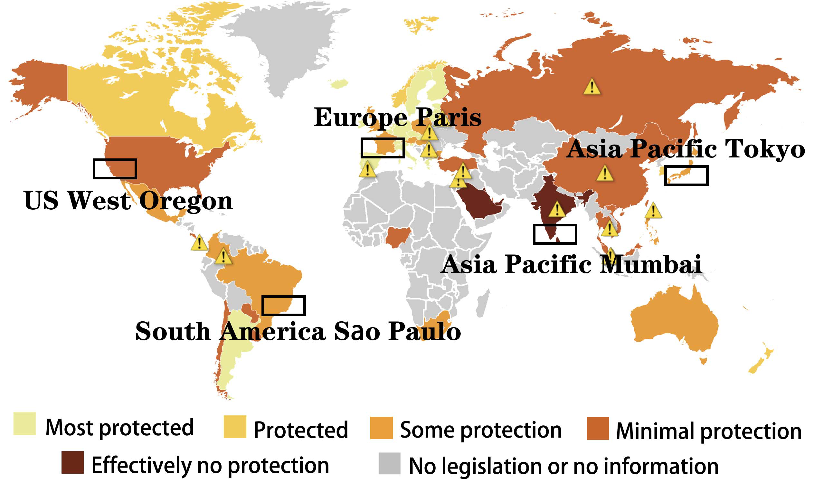
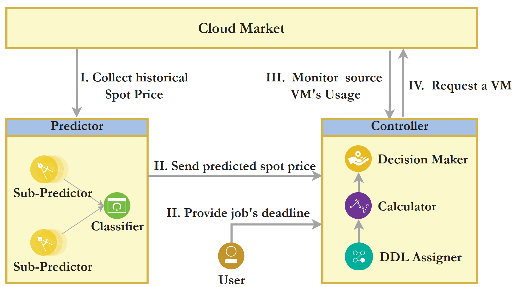
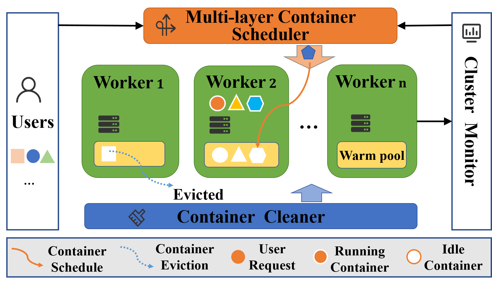
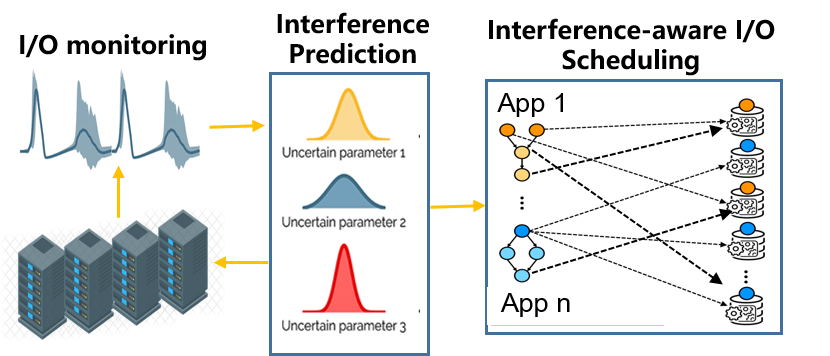

Dr. Zhou is currently an Assistant Professor at Department of Computer Science, Hong Kong Baptist University.
She received her Ph.D. degree in Computer Science from Nanyang Technological University (NTU) in 2016, under the supervision of Bingsheng He. She was a postdoc researcher in INRIA Rennes (2016-2017), working closely with Shadi Ibrahim. She was a faculty member with NHPCC, Shenzhen University (2017-2023). Her research interests include parallel and distributed systems, cloud computing and high-performance computing. She has published more than 30 technical articles in refereed journals and conferences including SC, HPDC, ICS, ICDE, ICDCS, ICPP and TPDS. She has been actively serving the community by participating in the organizing/program committees for conferences including SC, HPDC, ICPP, Cluster and CIKM. She is also serving as an Associate Editor for IEEE Transactions on Parallel and Distributed Systems (TPDS) and an Editor for Future Generation Computer Systems (FGCS). She is the recipient of the TCHPC Early Career Researchers Award and the SIGHPC China Rising Star Award in 2021. She received the Shenzhen Young Scientist Award in 2023.
I am looking for PhD/Intern/Visiting students with an interest in high-performance computing and distributed data systems. Please contact me with your CV. [More Info]
💻 Research
Exploiting the rich parallel and distributed architectures to accelerate Big Data/ML/AI applications is the main theme of my research. More specifically, we have been actively working on the following directions:
- Efficient and privacy-preserving graph computing in large-scale distributed data centers [details]
- Cost-efficient application serving in the Cloud, especially using serverless computing platforms [details]
- Interference-aware I/O scheduling and processing-in-memory optimizations for AI applications [details]
Some of our algorithms have been implemented in the following system prototypes:
- PGPregel: A differentially private graph engine.
- SciDB+RDMA: A network-optimized distributed array database.
- FStartBench: A benchmark for evaluating the startup latency of serverless platforms.
🔥 Recent Highlights
- 2023.10: Invited to serve as paper track chair for Cluster 2024. Welcome to submit!
- 2023.08: Joining Department of Computer Science, HKBU. We are hiring!
- 2023.08: Invited to serve as paper track chair for IPDPS 2024. Welcome to submit!
- 2023.06: Invited to deliver a talk "Unveiling the Power of Sampling in AI and More" at Meta, Menlo Park, CA, USA.
- 2023.03: Invited to serve as Birds of a Feather (BoF) chair for SC 2024. Welcome to submit!
📝 Publications
My full publication list can be found here: [Google Scholar][DBLP]
Below are some of our ongoing projects. Results of these projects include technical papers, patents and open-source tools.
Our projects have been supported by NSFC, NSFC-Guangdong, SZSTI and industrial fundings such as Tencent Rhino-Bird and Huawei.
Graph Computing
| Adaptive Graph Partitioning: Graph partitioning is important to the performance of distributed graph processing. However, when dealing with large graphs, there is a trade-off between partitioning effectiveness and efficiency. This problem further complicates for dynamic graphs with different changing frequencies. In this project, we innovatively proposed to adopt multi-agent reinforcement learning to address the graph partitioning problem. With a sampling-based technique to adaptively decide the number of agents participating in the training, we are able to adaptively achieve good balance between graph partitioning time and quality. |
|  PGPregel: In this project, we propose an end-to-end system for privacy-preserving graph processing in geo-distributed data centers. PGPregel adopts Differential Privacy (DP) to ensure privacy requirements casted by GDPR, and incorporates sampling and combiners techniques to make DP practical. To the best of our knowledge, this is the first of its kind to consider system latency, utility and privacy at the same time for geo-distributed graph processing. Currently, we are working on how to decide the hyperparameters of PGPregel (e.g., sampling rate, number of combiners) in an automatic and adaptive way. |
Cloud Computing
|  FarSpot: Public clouds offer various pricing schemes to satisfy different user requirements (e.g., on-demand, reservation, spot). Among them, spot instances offer much cheaper resources compared to on-demand instances, with the risk of unexpected instance failures when out-of-bid events occur. To take advantage of the low prices of spot instances while providing reliable execution for applications, in this project, we propose an ensemble-based predictor to accurately forecast spot price variations in near future and an instance migration strategy that can dynamically and efficiently migrate tasks from instances that are going to fail. This project offers a practical solution for long-running tasks to execute on spot instances with a low cost. |
| 
Multi-Layer Container Reuse (MLCR): In serverless computing, cold-start latency of containers is a major challenge to improving the performance of serverless applications. Existing techniques proposed to reuse warm containers in the platform to mitigate cold-start latency of functions to improve overall application performance. However, the utilizations of warm containers in existing systems are still low due to the complexity of real serverless workloads. In this project, we propose to reuse containers at multiple layers to greatly improve warm container utilization. Furthermore, we design a public benchmark named FStartBench for evaluating the effectiveness of different function warm start strategies.
Results: FStartBench [code] |
Storage and I/O
|  Interference-aware I/O Scheduling: In HPC systems, concurrent I/Os lead to resource contention and unavoidable I/O interferences. The degree of performance degradation caused by interferences is hard to predict due to the different I/O patterns, hardware features and I/O scheduling policies. To improve system performance, we have strived to design novel I/O scheduling mechanisms to minimize interferences, through analyzing workload I/O patterns and the read/write interference features of underlying storage medium. We are collaborating with National Supercomputing Centre in Shenzhen to make our strategies practical and applicable in real systems. |
🤝 Team
Current Team
- Mr. Zhenheng TANG, started from Sept 2020 (co-supervised with Prof. Xiaowen Chu)
- Mr. Yuxin WANG, started from Sept 2019 (co-supervised with Prof. Xiaowen Chu)
- Mr. Sitian CHEN, Research Assistant (April 2024 - Sept 2024)
Perspective Students
I'm looking for PhD/Intern/Visiting students with an interest in high-performance computing and distributed systems.
- For PhD of 2024Fall, I have two openings for application. Here are detailed info about how to apply.
- For visiting/intern students, I'm happy to work with self-motivated graduate/senior undergraduate students. Gap-year students planning to apply for PhD are also welcomed.
- What I expect from you:
- I hope you are proficient with at least one programming language, to be able to validate your ideas in real system environments. Experience in HPC challenges (e.g., ASC, PAC) is a big plus.
- Self-learning ability as well as good patience are needed in system research. You may encounter tons of intricate problems with system work, when good patience and passionate mind can help you overcome the challenges more smoothly.
- Remember that as your supervisor, I'm collaborating with you on the projects. Thus, communication is vital. I hope you are open-minded and good at team-work.
- Please read my page and learn about the topics we are working on before contacting. I always believe that interest is the best teacher.
🌻 Recent Services
- IEEE/ACM SC 2024 (BoF Chair)
- Cluster 2024 (Track Co-Chair)
- IPDPS 2024 (Track Co-Chair)
- TPDS 2023 Best Paper Award Committee
- PDSW@SC 2023 (General Chair)
- P2S2@ICPP 2023 (Program Chair)
- IEEE/ACM CCGrid 2023 (SCALE Challenge Co-Chair)
- IEEE CLOUD 2023 (Publicity Chair)
- Associate Editor, IEEE Transactions on Parallel and Distributed Systems (TPDS)
- Editor, Future Generation Computer Systems (FGCS)
- Guest Editor, Concurrency Computation Practice and Experience (CCPE)
📖 Teaching
- COMP 7095: Big Data Management (2024 Spring)
- COMP 7640: Database Systems and Administration (2024 Spring)
Latest update in Jan 2024.